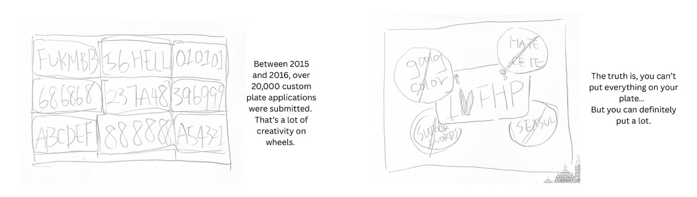

Californian Car Plates 被拒絕的兩萬張車牌，一支 85 秒的資料影片Californian Car Plates 20,000 rejected plates, one 85-second data video
加州人可以幫車牌自由命名——但 DMV 說了算。我們鑽進兩萬多筆個性化車牌申請與審核紀錄，把官僚審核流程變成一支幽默的資訊動畫。Californians can name their own license plates — but the DMV has the final say. We dug into 20,000+ vanity-plate applications and review records, turning bureaucratic moderation into a witty animated data video.
Data AnalysisScript WritingStoryboardMotion GraphicsAfter Effects
全程：資料分析・腳本提案・動畫製作（部分片段）End-to-end: data analysis · script proposal · animation (selected segments)
01從資料集裡找到故事Finding the Story in the Dataset
課程提供多個開放資料集（英國公廁、柏林行道樹、德國大選⋯），我們選了最有戲的一個：加州 DMV 個性化車牌申請紀錄——2015 至 2016 年超過 20,000 筆申請，每筆都留有審核員的核可／駁回決定與理由備註。分析後找到敘事鉤子：多數申請被拒，但拒絕的邏輯出人意料——有些看似無害的組合被駁回，有些遊走邊緣的反而過關。The course offered several open datasets (UK toilets, Berlin street trees, German elections…). We picked the most dramatic one: California DMV vanity-plate applications — 20,000+ applications from 2015–16, each carrying the reviewer's approve/reject decision and notes. Analysis surfaced the hook: most applications fail, but the logic of rejection is surprising — innocent-looking combos get denied while borderline ones slip through.
數據亮點：「420」相關組合 61 件申請僅 1 件通過；「14」「88」因常見於仇恨代碼而頻繁觸發紅旗——審核的不是字面，是語境。Data highlights: of 61 applications containing "420," exactly one was approved; "14" and "88" get flagged for their use in hate codes — reviewers judge context, not characters.
02從腳本到動畫From Script to Motion
我提出了影片腳本：以「你知道車牌可以自己取名嗎？」開場，帶觀眾走一遍審核流程，用真實的審核對話（申請者：「HOLYFCK 是宗教意涵！」→ REJECTED）製造笑點，數據段落用車牌牆與長條圖視覺化，結尾拋回給觀眾：「如果是你，你的車牌想寫什麼？」13 格手繪 storyboard 定稿後，以 Illustrator 建素材、After Effects 製作動態——我負責其中數個片段的動畫，包括使用正宗 Dealerplate California 字型的車牌畫面。I proposed the script: open with "did you know you can name your own plate?", walk viewers through the review process, mine the real reviewer dialogues for comedy (applicant: "HOLY as in religious!" → REJECTED), visualize the data with plate walls and bar charts, and end by throwing it back: "what would yours say?" After locking the 13-frame hand-drawn storyboard, we built assets in Illustrator and animated in After Effects — I animated several segments, including the plate scenes set in the authentic Dealerplate California typeface.

13 格 storyboard 之二：申請量與拒絕率的開場鋪陳。Two of the 13 storyboard frames: setting up application volume and rejection rates.影片中的數據段落：61 張「420」車牌申請，只有一張綠色的倖存者。The data beat: sixty-one "420" applications, one green survivor.
03學到的事What I Learned
資料的價值在反直覺處。「多數被拒」不是故事，「拒絕的邏輯無法預測、但紅旗有跡可循」才是——找到觀眾預期與數據事實的落差，敘事就成立了。Data earns its keep where it defies intuition. "Most get rejected" isn't a story; "rejection is unpredictable, but red flags follow patterns" is. Find the gap between expectation and fact, and the narrative writes itself.
幽默是資訊的載體，不是干擾。審核紀錄原文比任何編劇都好笑，我們只需要忠實引用——真實素材自帶說服力。Humor carries information; it doesn't dilute it. The reviewer notes were funnier than anything we could write — faithful quotation was the best scriptwriting.
85 秒是紀律。每一格分鏡都要同時推進敘事與數據，捨不得刪的段落通常就是該刪的段落。85 seconds is a discipline. Every frame must advance both story and data; the segment you can't bear to cut is usually the one to cut.